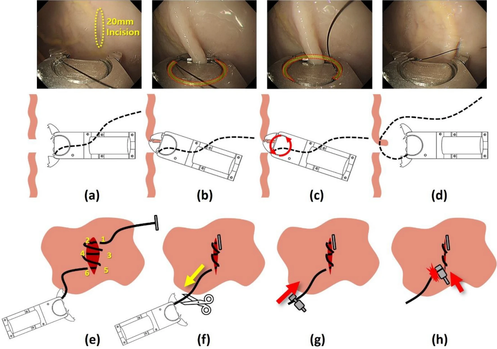

6번 바늘이 마지막 조직을 뚫고 나올 때, 봉합 부위는 상처 표면에서부터 ENDOCRAB 본체까지 오차 없이 정렬된 직렬(In-line) 배치를 형성합니다.
| 부품명 | 적용 재질 (ASTM/ISO) | 정밀 CAD 치수 및 규격 | 기계적 성능 및 특성 |
|---|---|---|---|
| 스토퍼 외통 하우징 | Ti-6Al-4V ELI (ASTM F136) | 외경 $\varnothing 1.40\text{ mm} \times 2.40\text{ mm}$, 플랜지 $\varnothing 1.60\text{ mm}$ | 생체적합성 ISO 10993, 조직 파고듦 방지 |
| 내통 톱니 플런저 | Ti-6Al-4V / Medical PEEK | 외경 $\varnothing 0.95\text{ mm}$, 관통홀 $\varnothing 0.30\text{ mm}$, $45^\circ/90^\circ$ 톱니 | 진입 마찰 $<0.5\text{ N}$, 자가 잠금력 $>20.0\text{ N}$ |
| 마이크로 압축 스프링 | 316LVM / Nitinol (ASTM F2063) | 선경 $\varnothing 0.10\text{ mm}$, 외경 $\varnothing 0.90\text{ mm}$, 자유장 $1.20\text{ mm}$ | 스프링 상수 $k=0.5\text{ N/mm}$, 프리로드 $0.15\text{ N}$ |
| ① 외장 푸시 튜브 (Outer) | Pebax 7233 + Flat Wire Coil | 외경 $\varnothing 1.40\text{ mm}$, 내경 $\varnothing 0.95\text{ mm}$ | 스토퍼 전방 가압/개방 지지, 좌굴 강도 $>30\text{ N}$ |
| ② 내부 견인 와이어 (Inner) | 316L Multi-strand Stainless | 외경 $\varnothing 0.25\text{ mm}$, 전장 $1.8\text{ m}$ | 인장 파단 강도 $> 50\text{ N}$ (봉합사 인장 견인선) |
| U자형 Nitinol 루프 | SE508 Superelastic Nitinol | 와이어 $\varnothing 0.10\text{ mm}$, 전개 루프폭 $3.5\sim 4.0\text{ mm}$ | 내부 견인선 선단 결합, 조준 실패 $0\%$ |
| 저마찰 표면 코팅 | Parylene-C / PTFE (두께 $3\,\mu\text{m}$) | USP Class VI Polymer | 도르래 마찰계수 $\mu < 0.06$ (실 마찰 손상 방지) |
| 1번 외벽 스토퍼 비즈 | 316L Stainless Steel (ASTM F138) | 외경 $\varnothing 1.40\text{ mm}$, 플랜지 $\varnothing 1.80\text{ mm}$ | 조직 찢어짐 방지 지지력 $> 18.0\text{ N}$ |